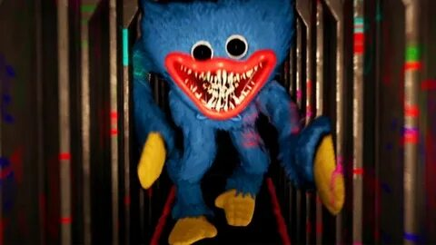

Poppy Playtime на ПК на первый вид похожа на очень простую и обычную игру, но вы должны немного погрузиться в ее атмосфере, и вы понимаете, что было в неправильном месте в неправильном времени. Вам вряд ли удалось выбраться отсюда в живых, но никто не запрещает рисковать. Перейти к старому заброшенному игрушечному заводу, и здесь вы можете собрать себя другом из старых запчастей. Вы должны оставаться в живых в этом ужасе / приключении головоломки. Попробуйте пережить игрушки отомстить, жду вас в заброшенном игрушечном заводе. Используйте свой GraBPack, чтобы взломать электрические цепи или любой адрес электронной почты. Исследуйте таинственный объект ... и не поймай. Герой преследует ненужный монстр, поэтому нужно прятаться и не попасть в глаза существа. История рассказывает о том, как главный герой был в стенах один раз знаменитой фабрики Playtime Co. Компания была известна лучшими игрушками в мире. Однако произошла авария, и теперь место стоит заброшено. Главный герой Поппи Плейтайм должен быть раскрыт истину, что стены ужасной фабрики скрываются в себе.
